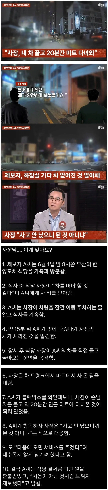

????????

????????
어디 아픈가?
저거 형사처벌대상인데 사장놈 간도크네 ㅋㅋ
자동차 불법 사용죄 ㅋㅋ
????????????????
식당 어디냐
부산이래
금욜에 부산가는데 잘됐다
이래서 BYD 타야된다는거임
얼마나 오픈마인드인건지 감도 안오네 ㅋㅋ
자동차등 불법사용죄
대단한 지능으로 장사는 어떻게 하고계신걸까
차뺀김에장보기??
결과론이지만 사고도 안났으니 차 잠깐 빌려주고 양꼬치 가족끼리 한사바리 했으니 개이득 같긴함ㅋㅋㅋㅋㅋ
사장 개씹돌아이네ㅋㅋㅋ
환불이 아니라 신고를 했어야지
개념이 없네 라는 말이 딱 이럴 때 쓰는 말인 듯
사고 났으면 존나 어지러울텐데 간 존나 크다
차종이 트럭이었나..